REPUBLIC OF GHANA
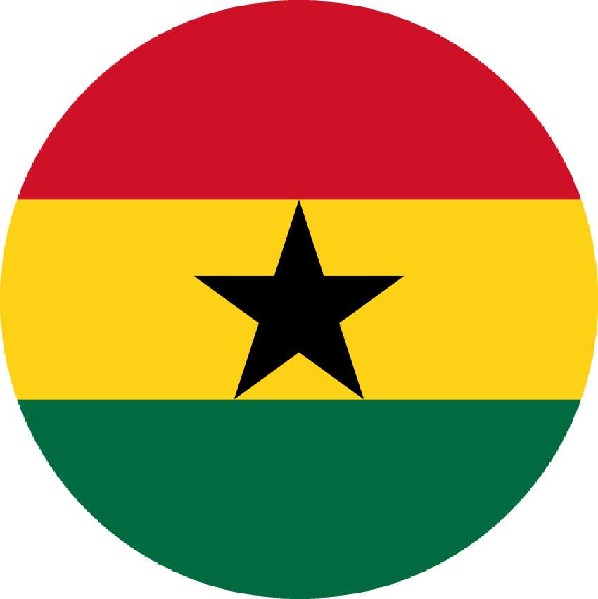
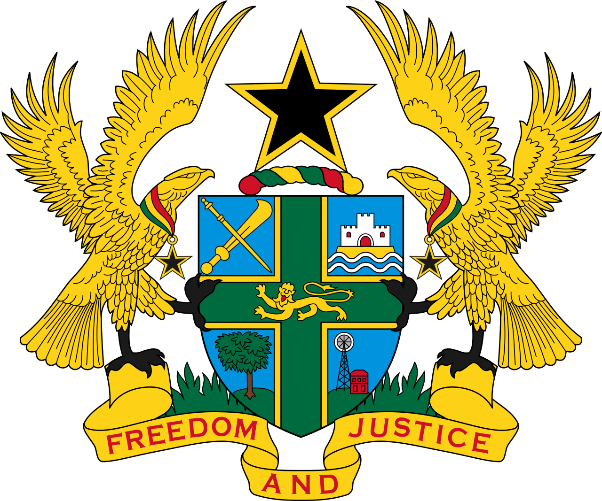
"Freedom and Justice"
First Republic (1960–1966)
FIRST PRESIDENT
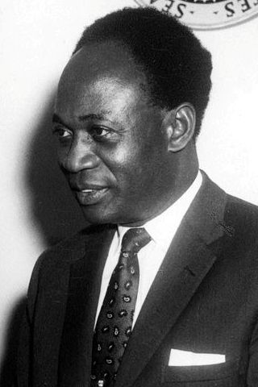

- Kwame Nkrumah
- Political Party: C.P.P.
- In Office From: 1 July 1960.
- In Office until: 26 February 1966 [Deposed in a Coup].
- Born: 21 September 1909.
- Died: 27 April 1972.
- Aged: 62 Years Old.
Military rule (1966–1969)
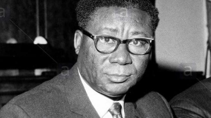

Chairman of the National Liberation Council
- Joseph Arthur Ankra
- Political Party: Military
- In Office From: 24 February 1966.
- In Office Until: 2 April 1969 [Resigned].
- Born: 18 August 1915.
- Died: 25 November 1992.
- Aged: 77 Years Old.
Second Republic (1969–1972)
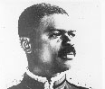
Chairman of the Presidentil Commission
- Akwasi Afrifa.
- Political Party: Military
- In Office From: 3 .September 1969.
- In Office Until: 7 August 1970.
- Born: 24 April 1936.
- Died: 26 June 1979 [Executed].
- Aged: 43 Years Old.
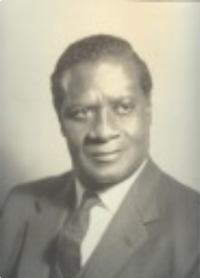

Acting President
- Nii Amaa Ollennu.
- Political Party: Independent
- In Office From: 7 August 1970.
- In Office Until: 31 August 1970.
- Born: 21 May 1906.
- Died: 22 December 1986.
- Aged: 80 Years Old.
FIRST PRESIDENT

- Edward Akufo-Addo
- Political Party: Independent
- In Office From: 31 August 1970.
- In Office Until: 13 January 1972 [Deposed in a Coup].
- Born: 26 June 1906.
- Died: 17 July 1979.
- Aged: 73 Years Old.
Military rule (1972–1979)
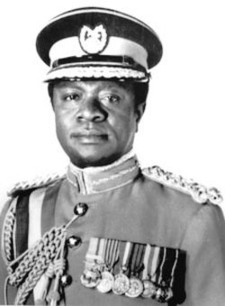
Chairman of the Sepreme Military Council
- Ignatius Kutu Acheampong
- Political Party: Military
- In Office From: 13 January 1972.
- In Office Until: 5 July 1978 [Deposed in a Coup].
- Born: 23 September 1931.
- Died: 16 June 1979 [Executed].
- Aged: 47 Years Old.
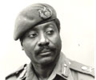
Chairman of the Sepreme Military Council
- Frederick William Kwasi Akuffo.
- Political Party: Military
- In Office From: 5 July 1978.
- In Office Until: 4 June 1979 [Deposed in a Coup].
- Born: 21 March 1973.
- Died: 26 June 1979 [Executed].
- Aged: 42 Years Old.
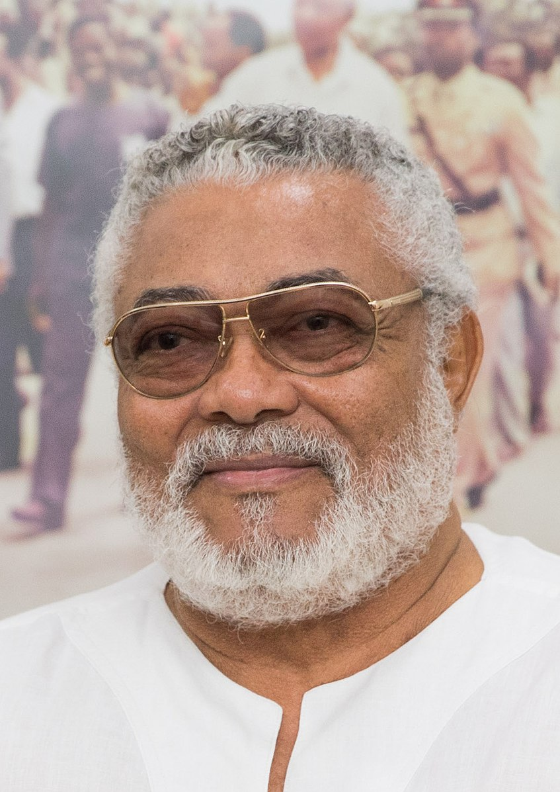
Chairman of the Armed Forces Revolutionary Council
- Jerry John Rawlings
- Political Party: Military
- In Office From: 4 June 1975.
- In Office Until: 24 September 1979.
- Born: 22 June 1947.
- Died: 12 November 2020.
- Aged: 73 Years Old.
Third Republic (1979–1981)
FIRST PRESIDENT
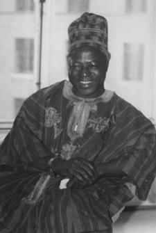
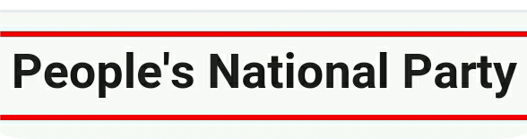
- Hilla Limann
- Political Party: P.N.P.
- In Office From: 24 September 1979.
- In Office until: 31 December 1981 [Deposed in a Coup].
- Born: 12 December 1934.
- Died: 23 June 1998.
- Aged: 63 Years Old.
Military rule (1981–1993)
Chairman of the Provisional National Defence Concil
- Jerry Rawlings
- Political Party: Military
- In Office From: 31 December 1981.
- In Office Until: 7 January 1993.
- Born: 18 August 1915.
- Died: 25 November 1992.
- Aged: 77 Years Old.
Fourth Republic (1993–present)
FIRST PRESIDENT
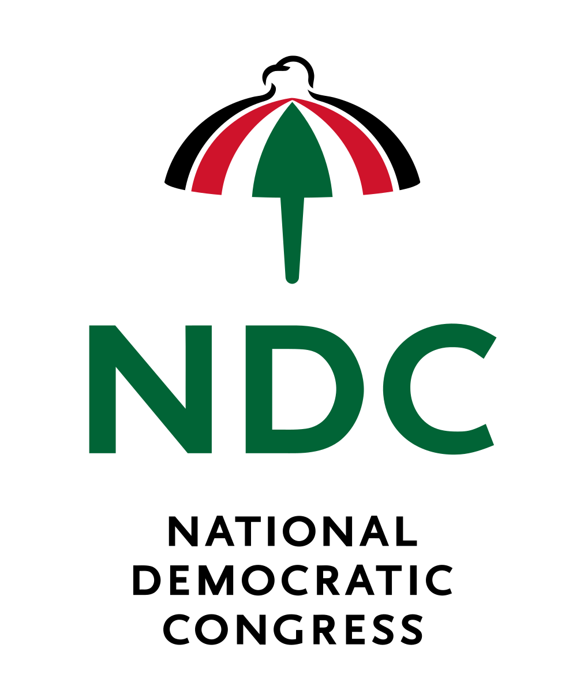
- Jerry Rawlings
- Political Party: N.D.C.
- In Office From: 7 January 1993.
- In Office Until: 7 January 2001.
- Born: 18 August 1915.
- Died: 25 November 1992.
- Aged: 77 Years Old.
SECOND PRESIDENT

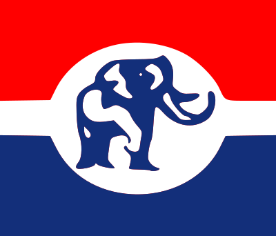
- John Kufuor.
- Political Party: N.P.P.
- In Office From: 7 January 2001.
- In Office Until: 7 January 2009.
- Born: 8 December 1938.
- Aged: 85 Years Old.
THIRD PRESIDENT
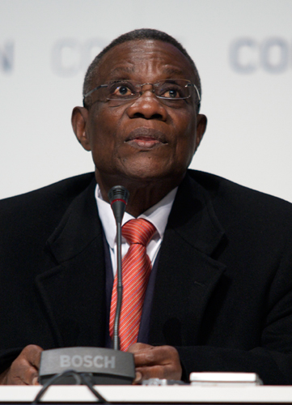
- John Atta Mills.
- Political Party: N.D.C.
- In Office From: 7 January 2009.
- In Office Until: 24 July 2012.
- Born: 21 July 1944.
- Died: 24 July 2012 [in Office].
- Aged: 68 Years Old.
FOURTH PRESIDENT
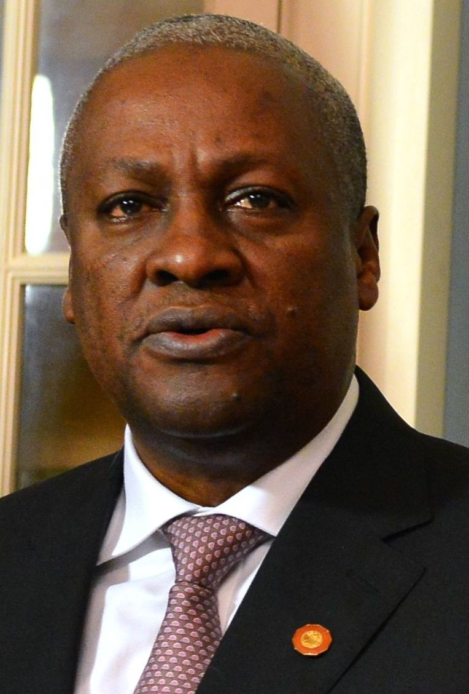
- John Mahama
- Political Party: N.D.C.
- In Office From: 24 july 2012.
- In Office Until: 7 January 2017.
- Born: 29 November 1958.
- Aged: 65 Years Old.
FIFTH PRESIDENT
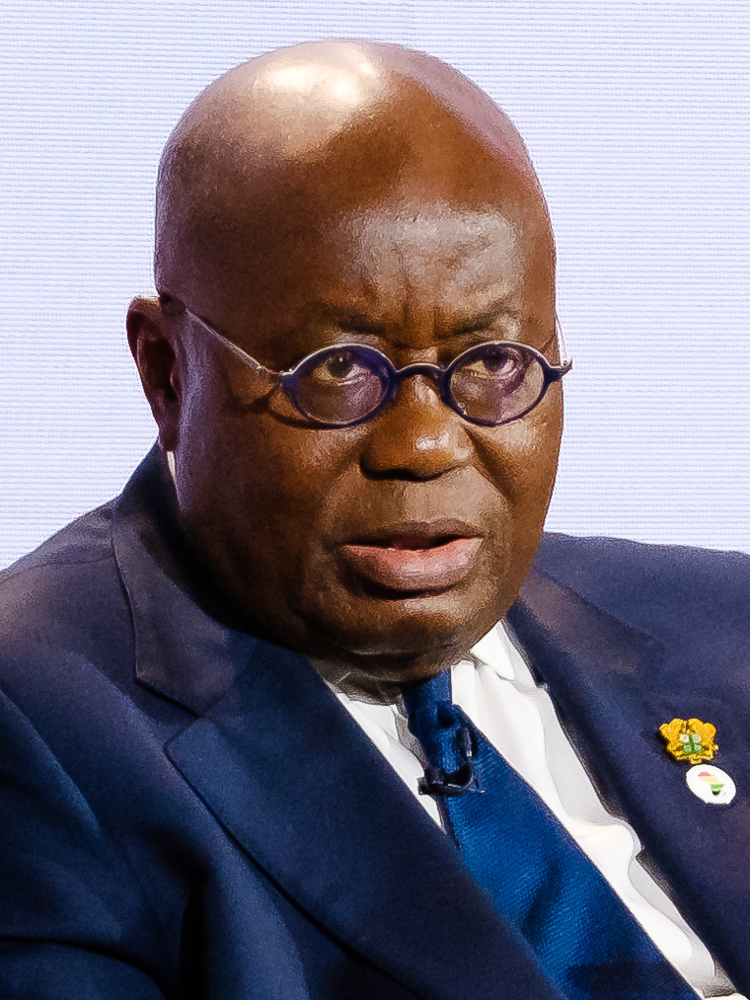
lncumbent President
- Nana Akufo-Addo
- Political Party: N.P.P.
- In Office From: 7 January 2017.
- In Office Until: Present.
- Born: 29 March 1944.
- Aged: 80 Years Old.